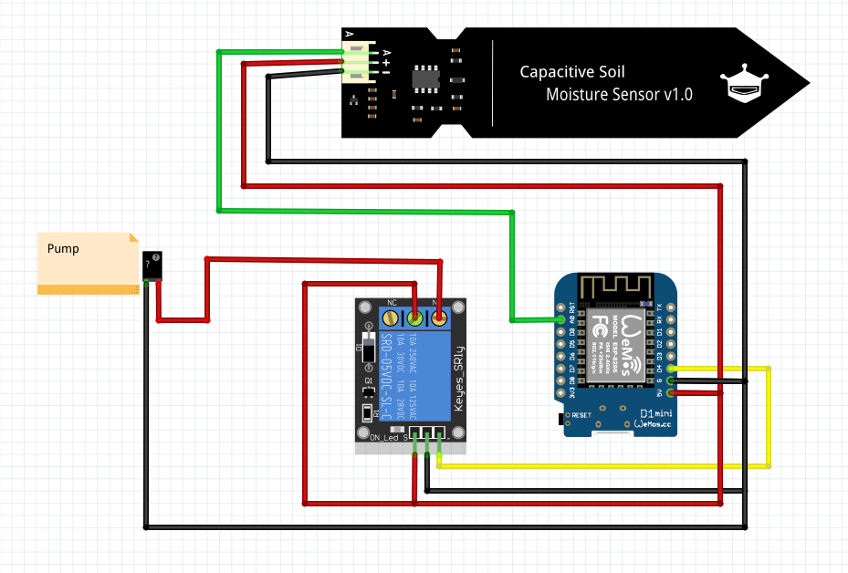

Lieber Scott,
ich wünsche dir zu dein deinem Geburtstag nur das Allerbeste.
Auch wenn wir dieses Jahr, dank Corona, ein etwas sonderbares ist, hoffe ich doch, dass du deinen Ehrentag genießen kannst.
Dieses Jahr bekommt du wieder etwas zum basteln von mir Geschenkt - Nämlich den Water Boy.
Amber hatte mir erzählt, dass du schon fleißig dabei bist deinen „Gemüsegarten“ anzulegen, und da dachte ich mir, dass eine Arduino gesteuerte Pflanzbewässerungsanlage perfekt zu dir passen würde!
Der Water Boy
Du bekommst von mir ein kleines Starterkit welches schon mal folgende Teile beinhaltet:
- “Arduino“ D1 mini
- Einen kapazitiven Moisture Sensor
- Zwei Wasserpumpen
- Relais zum ansteuern der Pumpe
- Wasserschlauch
Was du noch brauchst:
- Schaltlitze
- Lötzinn und Lötkolben
- Micro USB Kabel
- USB-Ladegerät oder Battery-Pack
Funktionalität
Mit dem Water Boy kannst du den aktuellen Feuchtigkeitswert in der Erde messen. Sobald eine (von dir eingestellter) Grenzewert erreicht wird, schaltet das Relais die Pumpe an.
Der Aufbau
Der Code
Ich habe dir die Grundversion des Water Boy auf github gelegt.
https://github.com/DennHa/WaterBoy_Pure/ (Die *.ino datei!)
Ich bin gerade noch dabei den Water Boy über die Blynk App noch zu erweitern um z.B. den Grenzwert über die App zu bestimmen zu können. Falls du Lust hast, können wir das Gerne auch mal bei einem Bier besprechen :)